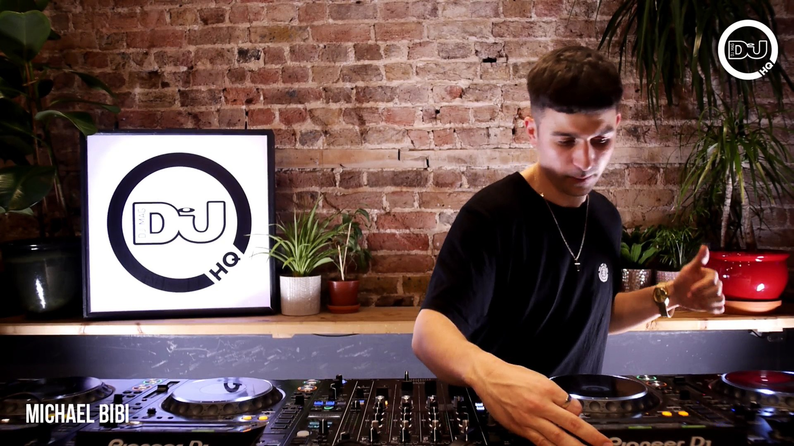

House
House can be very easily mistaken for Techno as both genres are very similar, the main difference being that House is much slower then Techno.
House holds the same tools as Techno when it comes to repetitive electronic sounding beats and drops, some would say House is a lot easier on the ear.
It operates mainly anywhere from 110 bpm to 135bpm and as said it most of the time is not up and go the way Techno is, but it can be mixed together along with
Techno and this is what most DJ producers and performers do, to give a nice blend of both.
House Artists
Jamie Jones:
Big Hit Song: Parallel Universe
Michael Bibi:
Big Hit Song: Hanging Tree

Bicep:
Big Hit Song: Glue
Classic House that Everyone Knows
Waves
Are You With Me
Firestone